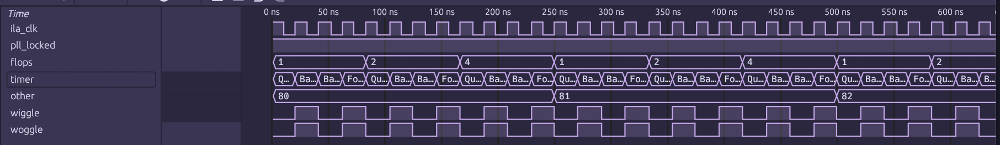

Getting Started¶
Now that you’ve [installed] Torii ILA, you’re all ready to start using it, or if you rather just want something to copy paste, you can find that in the TL;DR at the end.
This section of the docs will walk you through a very simple initial setup by using one of the examples that are provided.
This guide will cover the USB ILA example bitsy_usb_ila.py, but we’ll have the small changes in the UART example at the end.
Example Prerequisites¶
There are a few extra prerequisites needed, in this case you need a iCEBreaker Bitsy from 1BitSquared and to have Torii Boards installed.
It is also expected you have a VCD viewer installed, such as Surfer or gtkwave.
Example: USB Integrated Logic Analyzer¶
Now, with all of the prerequisites sorted, lets guide you through the example and how to set up a USB based Torii ILA.
Gateware¶
First up is the actual gateware that will be run on the device, it’s the example ILA along with some example signals and support bits.
PLL Module¶
The first big chunk is the PLL elaboratable, this is platform specific, but it shows how to set up an ICE40UP5K PLL for use as a USB device with Torii-USB.
42 print('Error: Torii ILA was not installed with USB support')
43 raise SystemExit(-1)
44
45from torii_ila.usb import USBIntegratedLogicAnalyzer
46
47class PLL(Elaboratable):
48 ''' 12MHz -> 48MHz PLL '''
49 def __init__(self) -> None:
50 self.locked = Signal()
51
52 def elaborate(self, platform: Platform) -> Module:
53 m = Module()
54
55 m.domains.sync = ClockDomain()
56 m.domains.usb = ClockDomain()
57 m.domains.usb_io = ClockDomain()
58
59 platform.lookup(platform.default_clk).attrs['GLOBAL'] = False
60
61 pll_clk = Signal()
62 usb_clk = Signal()
63
64 m.submodules.pll = Instance(
65 'SB_PLL40_PAD',
66 i_PACKAGEPIN = platform.request(platform.default_clk, dir = 'i'),
67 i_RESETB = Const(1),
68 i_BYPASS = Const(0),
69
70 o_PLLOUTCORE = pll_clk,
71 o_LOCK = self.locked,
72
73 p_FEEDBACK_PATH = 'SIMPLE',
74 p_PLLOUT_SELECT = 'GENCLK',
75 p_DIVR = 0,
76 p_DIVF = 63,
77 p_DIVQ = 4,
78 p_FILTER_RANGE = 1
79 )
80
81 platform.add_clock_constraint(pll_clk, 48e6)
82 platform.add_clock_constraint(usb_clk, 12e6)
83
84 clk_div = Signal(range(4))
85 m.d.usb_io += [ clk_div.inc(), ]
86
87 m.d.comb += [
88 usb_clk.eq(clk_div[1]),
89
90 ClockSignal('sync').eq(pll_clk),
91 ClockSignal('usb_io').eq(pll_clk),
92 ClockSignal('usb').eq(usb_clk),
93
94 ResetSignal('sync').eq(~self.locked),
The big thing to note here, as we will need it later, is the resulting frequency of the sync domain, which in this case is 48e6Hz or 48MHz.
Top Module¶
Next up is the main elaboratable module we will be synthesizing, in this case called Top. We set up a few example signals for us to capture on the FPGA so we can be sure that the ILA is doing something.
102 Foo = 0
103 Bar = 1
104 Baz = 2
105 Qux = 3
106
107class Top(Elaboratable):
108 def __init__(self) -> None:
109 counter_val = int(48 // 10)
The timer signal has an enum based decoder attached to it, this helps us show that the resulting VCD from the ILA retains signal decoders and emits them properly in the trace, it looks as follows:
96 ResetSignal('usb').eq(~self.locked),
97 ]
98
99 return m
100
Last thing in the constructor is the actual creation of the USBIntegratedLogicAnalyzer itself, we give it all the signals we want to keep track of, how deep we want our sample memory, as well as the sample rate which we got from the PLL config and the USB resource name for it to use.
112 self.timer = Signal(range(counter_val), reset = counter_val - 1, decoder = EnumValue)
113 self.flops = Signal(range(8), reset = 1)
114 self.other = Signal(8)
115
116 # Create a USB-Based ILA
117 self.ila = USBIntegratedLogicAnalyzer(
118 # The initial set of signals we care about
119 signals = [
120 self.pll_locked,
121 self.timer,
122 self.flops,
123 self.other,
124 ],
125 # How many samples we want to capture
126 sample_depth = 32,
Now we move on to the elaborate method, most of the stuff in here is just to support the example, but here we also ensure the ILA is a submodule, and also show an example of adding “private” signals to the ILA for capture.
Adding the ILA as a submodule is typical to torii:
139
The important thing in here is just below that, it’s where we create two module internal signals, and add them to the ILA for capture.
141
142 # Add the ILA so we actually build it
143 m.submodules.ila = self.ila
144
145 wiggle = Signal()
146 woggle = Signal()
Along with append_signals there is also an add_signal that lets you add a single Signal at a time rather than an iterable of them.
The remainder of the logic in elaborate is simply just driving the example signals:
148 # Add some "Private" signals to the ILA
149 self.ila.append_signals([wiggle, woggle])
150
151 with m.FSM(name = 'meow') as f:
152 self.ila.add_fsm(f)
153
154 with m.State('IDLE'):
155 with m.If(self.flops[1]):
156 m.next = 'WIGGLE'
157
158 with m.State('WIGGLE'):
159 m.d.sync += [
160 wiggle.eq(self.timer[0]),
161 woggle.eq(~wiggle),
162 ]
163
164 with m.If(self.flops[2]):
165 m.next = 'IDLE'
166
167 # Dummy logic wiggles
168 with m.If(self.timer == 0):
169 m.d.sync += [
170 self.timer.eq(self.timer.reset),
171 self.flops.eq(self.flops.rotate_left(1)),
172 ]
173 with m.If(self.flops[2]):
174 m.d.sync += [ self.other.inc(), ]
Building and Backhaul¶
Now that we have been aquatinted with the gateware, we can move on to the more exciting bits, actually building it, loading it onto a device, and getting real ILA samples back.
Platform Setup and Building¶
The first handful of lines after main() are just setup, we create an instance of our Top module, set the VCD destination file name, and create the platform for the iCEBreaker Bitsy that we are targeting.
192def main() -> int:
193 top = Top()
194 vcd_file = Path.cwd() / 'bitsy_usb_ila.vcd'
After that is the actual gateware synthesis and upload, we simply call plat.build with a handful of arguments to get everything handled for us.
197 print('Building gateware...')
198 try:
199 plat.build(
200 top, name = 'bitsy_usb_ila', do_program = True,
201 script_after_read = 'scratchpad -copy abc9.script.flow3 abc9.script\n',
202 synth_opts = ['-abc9'],
203 nextpnr_opts = [ '--seed 1' ]
204 )
205 except CalledProcessError as e:
206 # dfu-util complains because we don't come back as a DFU device
207 # In that case we don't care there was an error
208 if e.returncode != 251:
Some of these options need explaining, the name, and do_program are self explanatory, but the last three are a bit more archaic.
The script_after_read option is a string that is a Yosys command that is added to the synthesis script right after the design source is read in, this is prior to synthesis actually being executed. What this line is doing, is making abc9 run twice, to try to better optimize the design. This is used in conjunction with the synth_opts option of -abc9, which tells Yosys when synthesizing the design to use abc9.
The nextpnr_opts is simply passing a PNR seed that was found to work for this design, depending on nextpnr internal changes, the phase of the moon, or how grumpy your cat is that day, you might need to adjust this to make sure timings pass.
This whole thing is wrapped in a try/except because the USBIntegratedLogicAnalyzer does not set up a fully DFU compliant device, so when dfu-util sees the device come back and it is missing the DFU endpoint it gets cranky, but that’s okay.
Backhaul and Data Exfiltration¶
Now that all the gateware specific details have been dealt with, we can get data off the device! Exciting!
The first little bit just prints out the ILA configuration information for us, it’s not too important, the main focus here is getting our hands on a USBIntegratedLogicAnalyzerBackhaul interface.
That is a lot more straightforward than it seems:
217 backhaul = top.ila.get_backhaul()
See? It’s that easy!
You can actually do it two ways, the first being getting it from the ILA instance from the gateware, that is what is done above, and it has the advantage of just giving you a fully set up backhaul interface.
The other way is to manually construct a USBIntegratedLogicAnalyzerBackhaul and pass the ILA instance into it, so it can read the information it needs.
In the case of the USB ILA, the VID/PID are fixed, and the backhaul interface looks for them by default.
Next, we dump the decoded samples to stdout, this has a whole lot of machinery working behind the scenes to give us a simple signal name:value dictionary out from the USB device.
219 for ts, sample in backhaul.enumerate():
220 print(f'{ts / 1e-9:.2f} ns:')
221 for name, val in sample.items():
222 print(f' {name}: {val}')
After we list out the collected samples to stdout, we then write a VCD file:
224 backhaul.write_vcd(vcd_file)
Running the Example¶
Now we’re ready to run!
Hold down the button on the bitsy next to the USB port while you plug it in, this will cause it to boot into bootloader mode. This will be indicated by a flashing blue on the RGB LED.
Running lsusb -d 1d50:6146 should show the OpenMoko, Inc. iCEBreaker bitsy v1.x (DFU) device.
Next, simply run python bitsy_usb_ila.py, you should see it say Building gateware... followed by a bit of a delay. After that dfu-util should show that it is programming the device.
After another short delay of the device coming back, you should see the following output:
ILA Info:
bytes per sample: 2
bits per sample: 16
sample rate: 48.0 MHz
sample period: 20.833333333333332 ns
Collecting ILA Samples
0.00 ns:
pll_locked: 1
timer: 11
flops: 001
other: 10000000
wiggle: 0
woggle: 0
-- SNIP --
Writing to VCD: /path/to/bitsy_usb_ila.vcd
With that you should now have a VCD to load and look at, feel free to poke around, but it should look something like the following:

Note
Hot tip, you can use the web version of Surfer at https://app.surfer-project.org/ to load the VCD in your web browser
You may have noticed the ila_clk signal in the list and wonder where it came from. It’s a synthetic signal that is generated using the sample rate you gave the ILA. It is effectively the sample clock used in the ILA, but is not a direct capture of it.
Conclusion and UART Notes¶
And with that, you’re done! You’re all ready to go and use Torii ILA in your projects.
The UART ILA is much the same, the interface for everything is basically identical except in two spots. The first being in the actual construction of the ILA module itself:
111 self.tx = Signal()
112 self.rx = Signal()
113
114 # Create a UART-Based ILA
115 self.ila = UARTIntegratedLogicAnalyzer(
It has 3 extra kwargs, the first being divisor, this is the divisor used to drive the UART to reach the requested baud on the output clock domain, it should be int(clk_speed // baud). The next two are tx and rx, these are the signals that should be tied to the boards UART transmit and receive pins.
The second difference is in the backhaul interface:
231 print(f' sample period: {top.ila.sample_period / 1e-9} ns')
232 # Get the backhaul interface from the ILA module
233 backhaul = top.ila.get_backhaul(port = SERIAL_PORT_PATH, baudrate = SERIAL_PORT_BAUD)
234 print('Collecting ILA Samples')
The UART backhaul specifically wants a pre-configured pyserial Serial object due to the nature of the interface.
Other than that, the rest of the API is identical.
TL;DR¶
If you really just need something to drop in,
1 # In your imports section
2 from torii_ila import USBIntegratedLogicAnalyzer
3
4 # ...
5
6 # In your Torii Elaboratable `__init__`
7 self.ila = USBIntegratedLogicAnalyzer(
8 # The initial set of signals we care about
9 signals = [
10 # List of Signals
11 ],
12 # How many samples we want to capture
13 sample_depth = 32,
14 # How fast our sample domain is, in this case `sync`
15 sample_rate = 48e6,
16 # The name of the USB resource to pull from the platform.
17 bus = 'usb',
18 )
19
20 # ...
21
22 # In the def elaborate() method
23
24 m.submodules.ila = self.ila
25
26 # Wherever you need to get the backhaul interface
27
28 backhaul = top.ila.get_backhaul()
29 backhaul.write_vcd(vcd_file)
1 # In your imports section
2 from torii_ila import UARTIntegratedLogicAnalyzer
3
4 # ...
5
6 # In your Torii Elaboratable `__init__`
7 self.ila = UARTIntegratedLogicAnalyzer(
8 # UART Divisor (clk // baud)
9 divisor = int(48e6 // SERIAL_PORT_BAUD),
10 # UART IO
11 tx = self.tx, rx = self.rx,
12 # The initial set of signals we care about
13 signals = [
14 # List of Signals
15 ],
16 # How many samples we want to capture
17 sample_depth = 32,
18 # How fast our sample domain is, in this case `sync`
19 sample_rate = 48e6
20 )
21
22 # ...
23
24 # In the def elaborate() method
25
26 m.submodules.ila = self.ila
27
28 # Wherever you need to get the backhaul interface
29 backhaul = top.ila.get_backhaul(serialport)
30 backhaul.write_vcd(vcd_file)